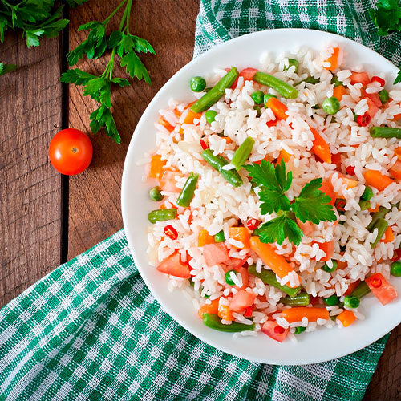

Ensalada de Arroz

La ensalada de arroz es una alternativa fresca y sencilla para disfrutar de una comida completa sin necesidad de preparaciones complicadas. Su combinación de arroz, verduras y atún ofrece una mezcla equilibrada de sabores y texturas. Además, puedes personalizarla fácilmente utilizando los ingredientes que tengas disponibles en casa.